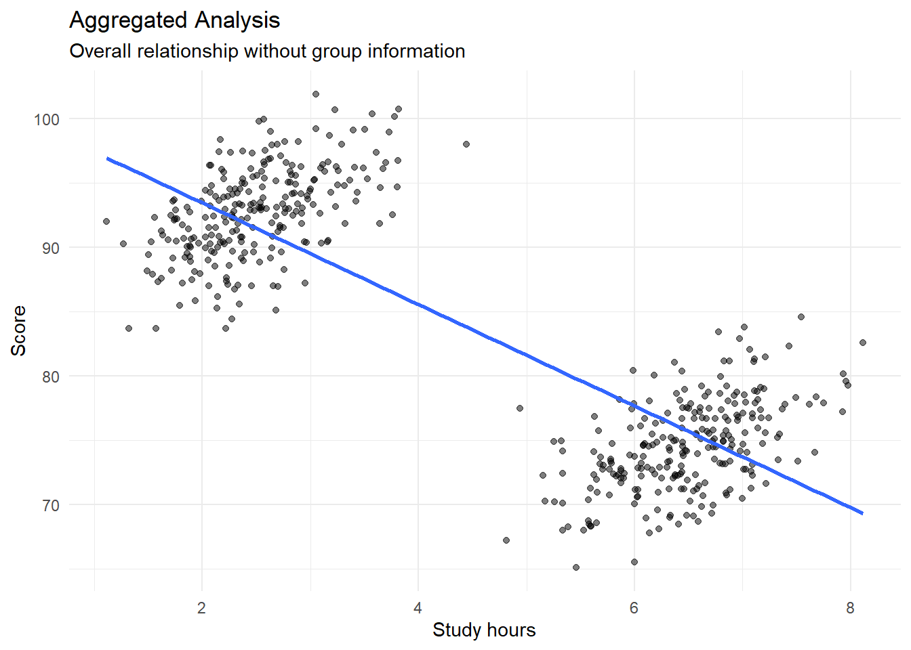
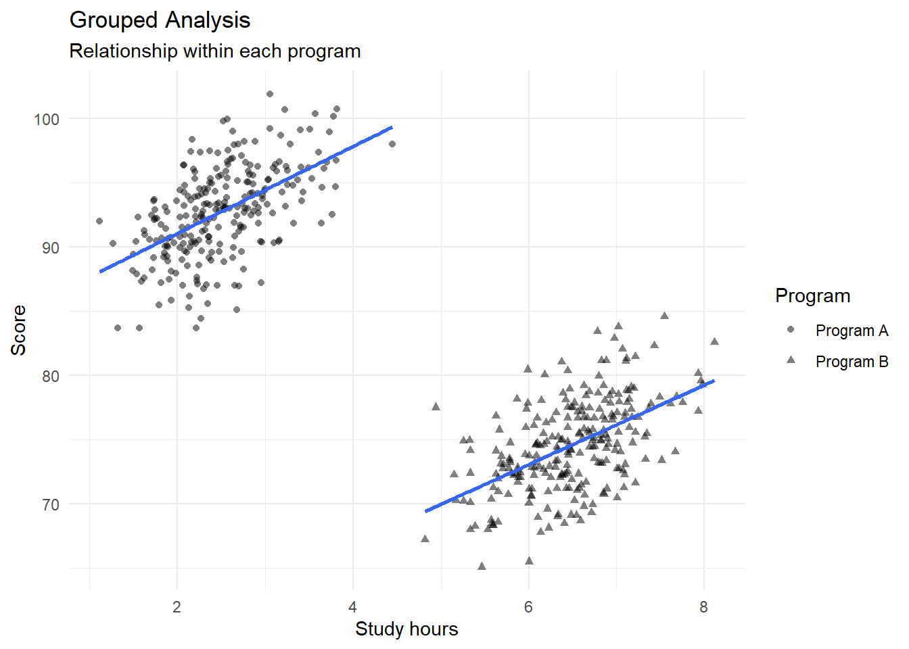
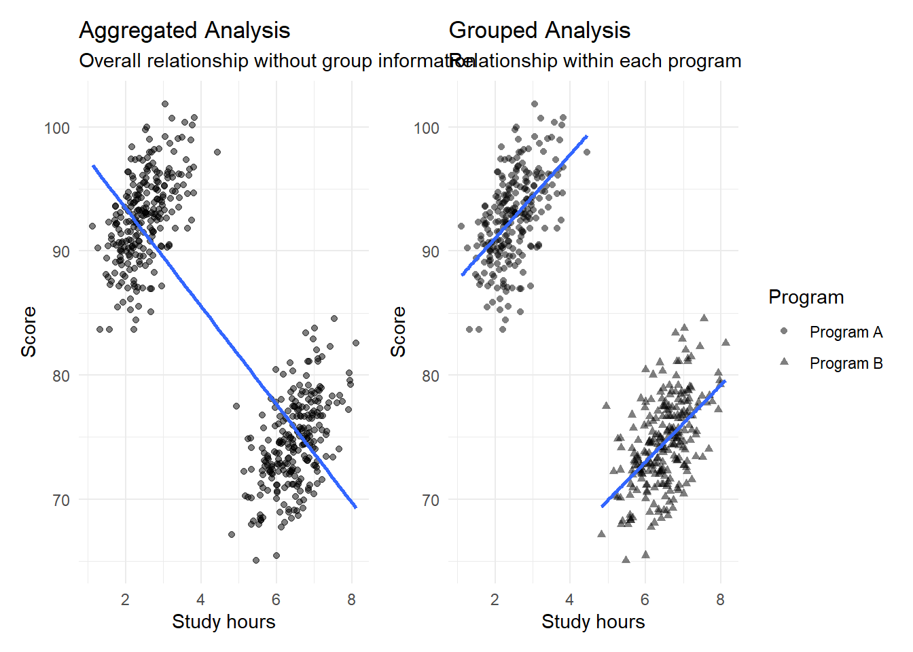
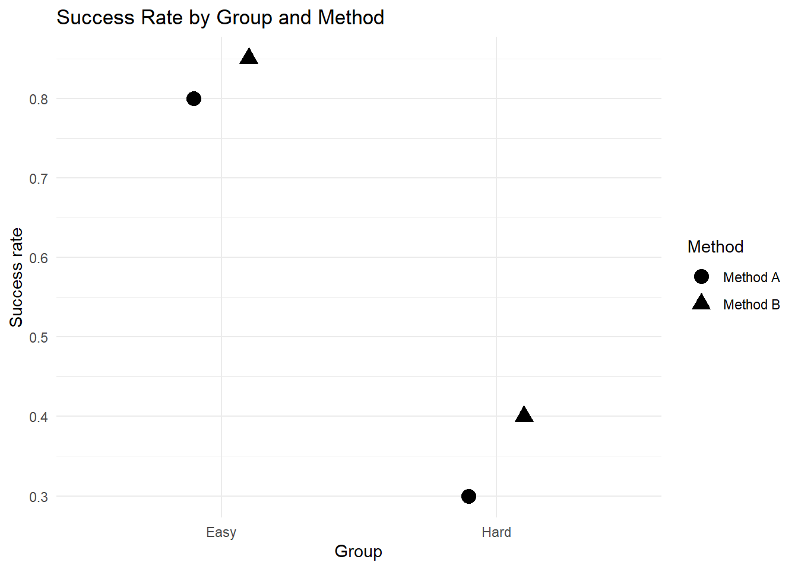
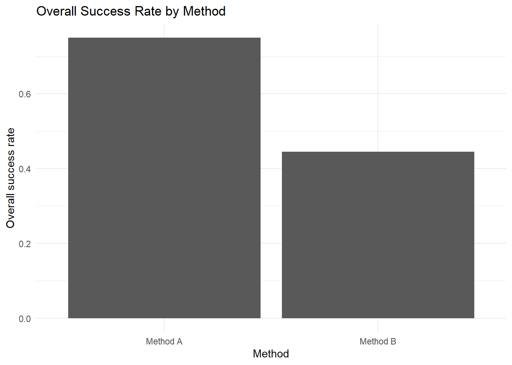

flowchart TD
A[Aggregated Data]
--> B[Overall Trend]
B --> C{Check Group Variable}
C --> D[Within-group Trend]
D --> E{Same or Different?}
E -->|Same| F[Stable Interpretation]
E -->|Different| G[Possible Simpson's Paradox]
G --> H[Check Confounding]
H --> I[Report Carefully]
Advanced 07. Nghịch lý Simpson
Simpson’s Paradox and Aggregation Bias
Tổng quan bài học
TipKết quả học tập (Learning Outcomes)
Sau khi hoàn thành bài học này, học viên có thể:
- Hiểu nghịch lý Simpson (Simpson’s Paradox)
- Phân biệt kết quả dữ liệu gộp (Aggregated Data) và dữ liệu theo nhóm (Grouped Data)
- Hiểu vai trò của biến gây nhiễu (Confounding Variable)
- Tạo ví dụ Simpson’s Paradox bằng R
- Trực quan hóa xu hướng tổng thể và xu hướng theo nhóm
- Hiểu vì sao phân tích dữ liệu gộp có thể gây kết luận sai
- Chạy mô hình hồi quy có và không có biến nhóm
- Viết kết quả phân tích Simpson’s Paradox theo cách thận trọng
- Áp dụng tư duy này vào nghiên cứu khảo sát và phân tích giáo dục, kinh doanh, y tế hoặc xã hội
NoteLogic bài học (Module Logic)
Bài học này trả lời câu hỏi:
Tại sao kết luận từ dữ liệu gộp đôi khi ngược với kết luận trong từng nhóm con?
Quy trình:
Aggregated Data
↓
Overall Pattern
↓
Group Variable
↓
Within-group Pattern
↓
Confounding
↓
Re-analysis
↓
Careful InterpretationMinh họa logic Simpson’s Paradox
1. Nghịch lý Simpson là gì?
NoteKiến thức nền tảng (Knowledge Notes)
Là gì? (What?)
Nghịch lý Simpson (Simpson’s Paradox) xảy ra khi xu hướng trong dữ liệu tổng hợp khác hoặc ngược với xu hướng trong từng nhóm con.
Tại sao cần? (Why?)
Nếu chỉ nhìn dữ liệu gộp, nhà nghiên cứu có thể kết luận sai.
Ví dụ:
Dữ liệu gộp: X có vẻ làm Y giảm
Trong từng nhóm: X lại làm Y tăngKhi nào xuất hiện? (When?)
Thường xuất hiện khi có một biến nhóm hoặc biến gây nhiễu ảnh hưởng đồng thời đến predictor và outcome.
Thực hiện kiểm tra thế nào? (How?)
Ta cần:
- Phân tích dữ liệu tổng thể
- Phân tích theo nhóm
- Trực quan hóa theo nhóm
- Kiểm tra mô hình có kiểm soát biến nhóm
- Diễn giải dựa trên thiết kế nghiên cứu và lý thuyết
ImportantỨng dụng trong nghiên cứu (Research Application)
Simpson’s Paradox có thể xuất hiện trong:
- Nghiên cứu giáo dục
- Phân tích điểm số sinh viên
- Đánh giá hiệu quả chương trình
- Nghiên cứu marketing
- Phân tích khách hàng
- Nghiên cứu y tế
- Nghiên cứu chính sách
- Dữ liệu khảo sát có nhiều nhóm đối tượng
WarningSai lầm thường gặp (Common Mistakes)
Người học thường mắc lỗi:
- Chỉ xem kết quả tổng thể
- Không kiểm tra nhóm con
- Không trực quan hóa dữ liệu
- Bỏ qua biến gây nhiễu
- Diễn giải correlation như causation
- Kết luận quá nhanh từ một biểu đồ hoặc một mô hình
2. Chuẩn bị dữ liệu
NoteKiến thức nền tảng (Knowledge Notes)
Module này dùng cả dữ liệu từ workbook nếu có và dữ liệu mô phỏng nội bộ để đảm bảo render ổn định.
Dữ liệu workbook:
data/advance/module7_advanced_data.xlsxSheet dự kiến:
06_Simpsons_ParadoxCài đặt package
install.packages("tidyverse")
install.packages("readxl")
install.packages("janitor")
install.packages("broom")
install.packages("gt")
install.packages("patchwork")Nạp package
library(tidyverse)
library(readxl)
library(janitor)
library(broom)
library(gt)
library(patchwork)Thiết lập đường dẫn dữ liệu
advanced_file <- if (file.exists("../data/advance/module7_advanced_data.xlsx")) {
"../data/advance/module7_advanced_data.xlsx"
} else if (file.exists("../data/advanced/module7_advanced_data.xlsx")) {
"../data/advanced/module7_advanced_data.xlsx"
} else if (file.exists("data/advance/module7_advanced_data.xlsx")) {
"data/advance/module7_advanced_data.xlsx"
} else {
"data/advanced/module7_advanced_data.xlsx"
}Đọc sheet nếu có
if (file.exists(advanced_file)) {
simpson_excel <- tryCatch(
{
read_excel(
advanced_file,
sheet = "06_Simpsons_Paradox"
) |>
clean_names()
},
error = function(e) NULL
)
if (!is.null(simpson_excel)) {
glimpse(simpson_excel)
}
}Rows: 12
Columns: 5
$ department <chr> "A_Easy", "A_Easy", "B_Easy", "B_Easy", "C_Medium", "C_…
$ gender <chr> "Male", "Female", "Male", "Female", "Male", "Female", "…
$ applications <dbl> 825, 108, 560, 25, 325, 593, 417, 375, 191, 393, 373, 3…
$ admitted <dbl> 512, 89, 353, 17, 120, 202, 138, 131, 53, 94, 22, 24
$ admission_rate <dbl> 0.6206, 0.8241, 0.6304, 0.6800, 0.3692, 0.3406, 0.3309,…3. Tạo dữ liệu minh họa Simpson’s Paradox
TipKết quả học tập (Learning Outcomes)
Sau phần này, học viên có thể:
- Tạo dữ liệu mô phỏng có Simpson’s Paradox
- Hiểu cách biến nhóm làm đảo chiều xu hướng
- Chuẩn bị dữ liệu cho phân tích tổng thể và phân tích nhóm
NoteKiến thức nền tảng (Knowledge Notes)
Để minh họa Simpson’s Paradox rõ ràng, ta tạo dữ liệu có hai nhóm:
Program A
Program BTrong từng nhóm, study_hours có quan hệ dương với score.
Nhưng do khác biệt giữa nhóm, xu hướng tổng thể có thể trở nên yếu hoặc ngược chiều.
Tạo dữ liệu mô phỏng
set.seed(123)
group_a <- tibble(
program = "Program A",
study_hours = rnorm(250, mean = 2.5, sd = 0.6),
score = 85 + 3 * study_hours + rnorm(250, mean = 0, sd = 3)
)
group_b <- tibble(
program = "Program B",
study_hours = rnorm(250, mean = 6.5, sd = 0.6),
score = 55 + 3 * study_hours + rnorm(250, mean = 0, sd = 3)
)
simpson_data <- bind_rows(group_a, group_b) |>
mutate(
program = factor(program)
)
glimpse(simpson_data)Rows: 500
Columns: 3
$ program <fct> Program A, Program A, Program A, Program A, Program A, Pro…
$ study_hours <dbl> 2.163715, 2.361894, 3.435225, 2.542305, 2.577573, 3.529039…
$ score <dbl> 90.36434, 90.40005, 94.27392, 92.89841, 97.52824, 95.32142…Kiểm tra thống kê mô tả theo nhóm
simpson_data |>
group_by(program) |>
summarise(
n = n(),
mean_study_hours = mean(study_hours),
mean_score = mean(score),
correlation = cor(study_hours, score),
.groups = "drop"
)
ImportantDiễn giải ban đầu (Initial Interpretation)
Trong từng chương trình, study_hours có thể tương quan dương với score.
Tuy nhiên, vì hai chương trình có mức điểm nền rất khác nhau, phân tích gộp có thể cho xu hướng khác.
4. Phân tích dữ liệu gộp
TipKết quả học tập (Learning Outcomes)
Sau phần này, học viên có thể:
- Phân tích xu hướng tổng thể
- Tính correlation trên dữ liệu gộp
- Chạy hồi quy đơn giản không kiểm soát nhóm
- Nhận diện nguy cơ kết luận sai
NoteKiến thức nền tảng (Knowledge Notes)
Dữ liệu gộp là gì?
Dữ liệu gộp là dữ liệu không phân biệt nhóm con.
Ví dụ:
Tất cả sinh viên từ nhiều chương trình được phân tích chungVấn đề là gì?
Nếu nhóm có đặc điểm khác nhau, kết quả tổng thể có thể che giấu xu hướng thật trong từng nhóm.
Correlation tổng thể
overall_correlation <- cor(
simpson_data$study_hours,
simpson_data$score
)
overall_correlation[1] -0.8393468Hồi quy tổng thể
overall_model <- lm(
score ~ study_hours,
data = simpson_data
)
summary(overall_model)
Call:
lm(formula = score ~ study_hours, data = simpson_data)
Residuals:
Min 1Q Median 3Q Max
-15.1671 -3.8788 0.0305 3.5106 14.4894
Coefficients:
Estimate Std. Error t value Pr(>|t|)
(Intercept) 101.3407 0.5666 178.86 <2e-16 ***
study_hours -3.9487 0.1146 -34.46 <2e-16 ***
---
Signif. codes: 0 '***' 0.001 '**' 0.01 '*' 0.05 '.' 0.1 ' ' 1
Residual standard error: 5.32 on 498 degrees of freedom
Multiple R-squared: 0.7045, Adjusted R-squared: 0.7039
F-statistic: 1187 on 1 and 498 DF, p-value: < 2.2e-16Bảng hệ số tổng thể
tidy(overall_model, conf.int = TRUE)Biểu đồ tổng thể
fig_overall <- ggplot(simpson_data, aes(x = study_hours, y = score)) +
geom_point(alpha = 0.5) +
geom_smooth(method = "lm", se = FALSE) +
labs(
title = "Aggregated Analysis",
subtitle = "Overall relationship without group information",
x = "Study hours",
y = "Score"
) +
theme_minimal()
fig_overall
WarningSai lầm thường gặp (Common Mistakes)
Nếu chỉ nhìn biểu đồ tổng thể, ta có thể kết luận rằng tăng study hours liên quan đến điểm thấp hơn hoặc không có lợi.
Nhưng kết luận này có thể sai nếu chưa kiểm tra biến nhóm.
5. Phân tích theo nhóm
TipKết quả học tập (Learning Outcomes)
Sau phần này, học viên có thể:
- Phân tích xu hướng trong từng nhóm
- So sánh within-group pattern và overall pattern
- Trực quan hóa xu hướng theo nhóm
NoteKiến thức nền tảng (Knowledge Notes)
Phân tích theo nhóm là gì?
Phân tích theo nhóm kiểm tra mối quan hệ giữa predictor và outcome trong từng nhóm con.
Tại sao cần?
Nó giúp phát hiện:
- Confounding
- Heterogeneity
- Group-specific pattern
- Simpson’s Paradox
Correlation theo nhóm
group_correlation <- simpson_data |>
group_by(program) |>
summarise(
correlation = cor(study_hours, score),
.groups = "drop"
)
group_correlationHồi quy theo nhóm
group_models <- simpson_data |>
group_by(program) |>
group_modify(
~ tidy(
lm(score ~ study_hours, data = .x),
conf.int = TRUE
)
) |>
ungroup()
group_modelsBiểu đồ theo nhóm
fig_grouped <- ggplot(
simpson_data,
aes(x = study_hours, y = score, shape = program)
) +
geom_point(alpha = 0.5) +
geom_smooth(method = "lm", se = FALSE) +
labs(
title = "Grouped Analysis",
subtitle = "Relationship within each program",
x = "Study hours",
y = "Score",
shape = "Program"
) +
theme_minimal()
fig_grouped
So sánh hai biểu đồ
fig_overall + fig_grouped
ImportantDiễn giải kết quả (Interpretation)
Nếu hệ số tổng thể khác hoặc ngược với hệ số theo từng nhóm, đây là dấu hiệu của Simpson’s Paradox hoặc aggregation bias.
6. Vai trò của biến gây nhiễu
TipKết quả học tập (Learning Outcomes)
Sau phần này, học viên có thể:
- Hiểu biến gây nhiễu (Confounding Variable)
- Biết vì sao program có thể gây nhiễu
- Chạy mô hình có kiểm soát nhóm
- So sánh mô hình trước và sau kiểm soát nhóm
NoteKiến thức nền tảng (Knowledge Notes)
Biến gây nhiễu là gì?
Biến gây nhiễu (Confounding Variable) là biến liên quan đến cả predictor và outcome, làm sai lệch mối quan hệ quan sát được.
Trong ví dụ này:
programliên quan đến:
- study_hours
- score
nên có thể làm sai kết luận nếu không kiểm soát.
Mô hình không kiểm soát program
model_without_group <- lm(
score ~ study_hours,
data = simpson_data
)
tidy(model_without_group, conf.int = TRUE)Mô hình có kiểm soát program
model_with_group <- lm(
score ~ study_hours + program,
data = simpson_data
)
tidy(model_with_group, conf.int = TRUE)Mô hình có interaction
model_interaction <- lm(
score ~ study_hours * program,
data = simpson_data
)
tidy(model_interaction, conf.int = TRUE)
ImportantDiễn giải kết quả (Interpretation)
Khi thêm program vào mô hình, hệ số của study_hours phản ánh mối quan hệ giữa study hours và score sau khi kiểm soát khác biệt giữa chương trình.
Nếu hệ số thay đổi mạnh so với mô hình gộp, biến nhóm có vai trò quan trọng.
WarningSai lầm thường gặp (Common Mistakes)
Không phải cứ thêm biến kiểm soát là đúng.
Biến kiểm soát cần có cơ sở lý thuyết và logic nghiên cứu.
7. Bảng so sánh mô hình
TipKết quả học tập (Learning Outcomes)
Sau phần này, học viên có thể:
- Tạo bảng so sánh mô hình
- So sánh hệ số trước và sau khi kiểm soát nhóm
- Trình bày kết quả rõ ràng hơn
Tạo bảng so sánh hệ số
comparison_table <- bind_rows(
tidy(model_without_group, conf.int = TRUE) |>
mutate(model = "Without group"),
tidy(model_with_group, conf.int = TRUE) |>
mutate(model = "With group"),
tidy(model_interaction, conf.int = TRUE) |>
mutate(model = "Interaction model")
) |>
select(
model,
term,
estimate,
conf.low,
conf.high,
p.value
)
comparison_tableBảng đẹp bằng gt
comparison_table |>
gt() |>
tab_header(
title = "Model Comparison",
subtitle = "Effect of controlling for group variable"
) |>
fmt_number(
columns = c(estimate, conf.low, conf.high, p.value),
decimals = 3
)| Model Comparison | |||||
| Effect of controlling for group variable | |||||
| model | term | estimate | conf.low | conf.high | p.value |
|---|---|---|---|---|---|
| Without group | (Intercept) | 101.341 | 100.228 | 102.454 | 0.000 |
| Without group | study_hours | −3.949 | −4.174 | −3.724 | 0.000 |
| With group | (Intercept) | 84.661 | 83.464 | 85.858 | 0.000 |
| With group | study_hours | 3.229 | 2.774 | 3.685 | 0.000 |
| With group | programProgram B | −31.058 | −32.950 | −29.167 | 0.000 |
| Interaction model | (Intercept) | 84.273 | 82.566 | 85.980 | 0.000 |
| Interaction model | study_hours | 3.385 | 2.718 | 4.052 | 0.000 |
| Interaction model | programProgram B | −29.789 | −34.195 | −25.384 | 0.000 |
| Interaction model | study_hours:programProgram B | −0.291 | −1.205 | 0.622 | 0.531 |
Một cách kiểm tra Simpson’s Paradox là so sánh:
Model without group
vs
Model with group
vs
Model with interaction8. Ví dụ dạng tỷ lệ
TipKết quả học tập (Learning Outcomes)
Sau phần này, học viên có thể:
- Hiểu Simpson’s Paradox với dữ liệu tỷ lệ
- Tính success rate tổng thể
- Tính success rate theo nhóm
- Trực quan hóa tỷ lệ
NoteKiến thức nền tảng (Knowledge Notes)
Simpson’s Paradox không chỉ xảy ra với hồi quy tuyến tính.
Nó cũng có thể xảy ra với dữ liệu tỷ lệ như:
- Tỷ lệ đậu
- Tỷ lệ mua hàng
- Tỷ lệ chấp nhận công nghệ
- Tỷ lệ phục hồi
- Tỷ lệ hoàn thành khóa học
Tạo dữ liệu tỷ lệ
rate_data <- tibble(
group = c("Easy", "Easy", "Hard", "Hard"),
method = c("Method A", "Method B", "Method A", "Method B"),
total = c(900, 100, 100, 900),
success = c(720, 85, 30, 360)
) |>
mutate(
success_rate = success / total
)
rate_dataTỷ lệ theo nhóm
rate_data |>
select(group, method, total, success, success_rate)Tỷ lệ tổng thể
overall_rate <- rate_data |>
group_by(method) |>
summarise(
total = sum(total),
success = sum(success),
success_rate = success / total,
.groups = "drop"
)
overall_rateBiểu đồ tỷ lệ theo nhóm
ggplot(rate_data, aes(x = group, y = success_rate, shape = method)) +
geom_point(size = 4, position = position_dodge(width = 0.4)) +
labs(
title = "Success Rate by Group and Method",
x = "Group",
y = "Success rate",
shape = "Method"
) +
theme_minimal()
Biểu đồ tỷ lệ tổng thể
ggplot(overall_rate, aes(x = method, y = success_rate)) +
geom_col() +
labs(
title = "Overall Success Rate by Method",
x = "Method",
y = "Overall success rate"
) +
theme_minimal()
ImportantDiễn giải kết quả (Interpretation)
Một phương pháp có thể tốt hơn trong từng nhóm, nhưng kém hơn ở tổng thể nếu phân bổ số quan sát giữa các nhóm không cân bằng.
Đó là một dạng điển hình của Simpson’s Paradox.
9. Quy trình kiểm tra Simpson’s Paradox
NoteKiến thức nền tảng (Knowledge Notes)
Khi phân tích dữ liệu, nên kiểm tra theo quy trình sau:
1. Vẽ dữ liệu tổng thể
2. Tính kết quả tổng thể
3. Xác định biến nhóm quan trọng
4. Vẽ dữ liệu theo nhóm
5. Tính kết quả theo nhóm
6. So sánh tổng thể và theo nhóm
7. Chạy mô hình có kiểm soát nhóm
8. Diễn giải thận trọngDecision tree
flowchart TD
A[Analyze Overall Data]
--> B{Possible Group Variable?}
B -->|No| C[Report Overall Result Carefully]
B -->|Yes| D[Analyze by Group]
D --> E{Trend Changes?}
E -->|No| F[Pattern is More Stable]
E -->|Yes| G[Possible Simpson's Paradox]
G --> H[Check Confounding]
H --> I[Model with Group Variable]
I --> J[Report Both Overall and Grouped Results]
10. Viết kết quả học thuật
NoteKiến thức nền tảng (Knowledge Notes)
Là gì? (What?)
Viết kết quả Simpson’s Paradox cần nhấn mạnh rằng kết quả gộp và kết quả theo nhóm có thể khác nhau.
Nguyên tắc
- Không chỉ báo cáo kết quả tổng thể
- Báo cáo rõ biến nhóm
- Trình bày kết quả theo nhóm
- Nêu khả năng confounding
- Tránh diễn giải nhân quả nếu không có thiết kế phù hợp
Template kết quả tổng thể
The aggregated analysis suggested a negative association between study hours and scores. However, this pattern changed when the data were disaggregated by program.Template kết quả theo nhóm
Within each program, study hours were positively associated with scores. This indicates that the aggregated association was likely influenced by differences in baseline scores across programs.Template diễn giải thận trọng
These findings illustrate the importance of examining group-level patterns before drawing conclusions from aggregated data. The results should not be interpreted as causal evidence without further design-based support.
WarningSai lầm thường gặp (Common Mistakes)
Không nên viết:
The overall result was wrong.Nên viết:
The overall result was incomplete because it masked important group-level patterns.11. Bài tập thực hành
ImportantBài tập thực hành (Practice Exercise)
Hãy thực hiện:
- Tạo dữ liệu mô phỏng gồm hai nhóm.
- Tính correlation tổng thể.
- Tính correlation theo nhóm.
- Chạy hồi quy tổng thể.
- Chạy hồi quy có kiểm soát nhóm.
- Chạy hồi quy có interaction.
- Vẽ scatter plot tổng thể.
- Vẽ scatter plot theo nhóm.
- Tạo bảng so sánh mô hình.
- Tạo ví dụ Simpson’s Paradox dạng tỷ lệ.
- Viết một đoạn diễn giải kết quả.
12. Thử thách
WarningThử thách (Challenge)
Tình huống
Một trường học phân tích dữ liệu và thấy rằng sinh viên học nhiều giờ hơn lại có điểm thấp hơn.
Tuy nhiên, khi phân tích riêng từng chương trình học, trong chương trình nào học nhiều giờ hơn cũng có điểm cao hơn.
Câu hỏi
- Đây có thể là hiện tượng gì?
- Biến nhóm nào có thể gây nhiễu?
- Vì sao phân tích gộp gây hiểu sai?
- Cần chạy những phân tích nào?
- Nên báo cáo kết quả thế nào?
TipGợi ý trả lời (Suggested Solution)
Một câu trả lời tốt nên nêu:
- Đây có thể là Simpson’s Paradox.
- Program có thể là confounding variable.
- Phân tích gộp che giấu khác biệt giữa chương trình.
- Cần phân tích tổng thể, theo nhóm và mô hình có kiểm soát nhóm.
- Nên báo cáo cả kết quả tổng thể và kết quả theo nhóm.
13. Dự án nhỏ
ImportantDự án nhỏ (Mini Project)
Chủ đề
Simpson’s Paradox Diagnostic Report
Sản phẩm đầu ra
Học viên cần tạo:
Simpsons_Paradox_Report.htmlNội dung báo cáo
- Research question
- Aggregated analysis
- Grouped analysis
- Visualization of overall trend
- Visualization of within-group trend
- Confounding explanation
- Regression comparison
- Rate-based example
- Academic interpretation
- Recommendation for reporting
14. Điểm cần ghi nhớ
- Simpson’s Paradox xảy ra khi xu hướng tổng thể khác với xu hướng trong nhóm.
- Phân tích dữ liệu gộp có thể gây kết luận thiếu chính xác.
- Biến nhóm có thể đóng vai trò confounder.
- Luôn kiểm tra các nhóm con quan trọng.
- Visualization rất hữu ích để phát hiện Simpson’s Paradox.
- Nên so sánh mô hình có và không có biến nhóm.
- Không nên diễn giải correlation hoặc regression cắt ngang như causal evidence.
- Báo cáo tốt cần trình bày cả overall pattern và group-level pattern.
15. Bước tiếp theo
NoteBước tiếp theo (What Next?)
Sau khi hoàn thành phần này, học viên nên:
- Biết kiểm tra dữ liệu tổng thể và dữ liệu theo nhóm.
- Biết phát hiện aggregation bias.
- Biết dùng visualization để kiểm tra xu hướng.
- Biết viết kết quả thận trọng.
- Chuyển sang:
Trong phần tiếp theo, chúng ta sẽ học phân tích và trực quan hóa dữ liệu Likert nâng cao.